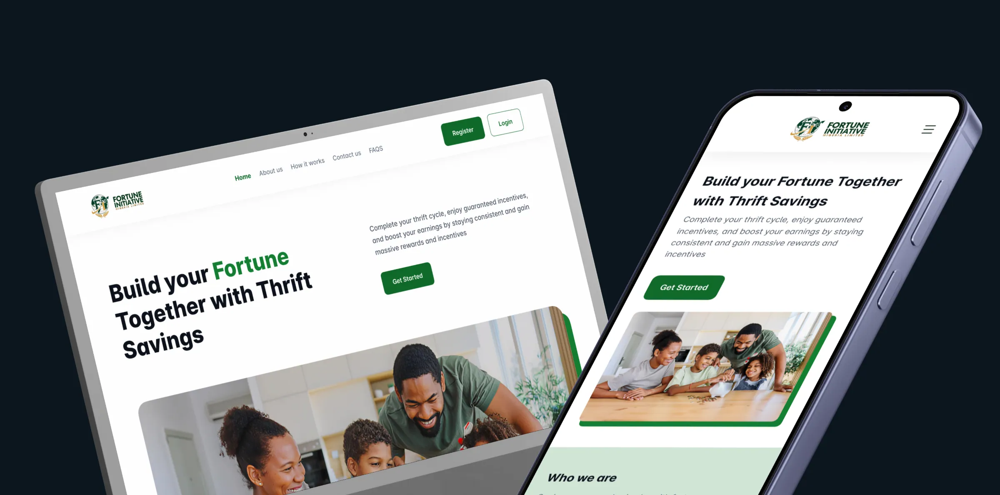
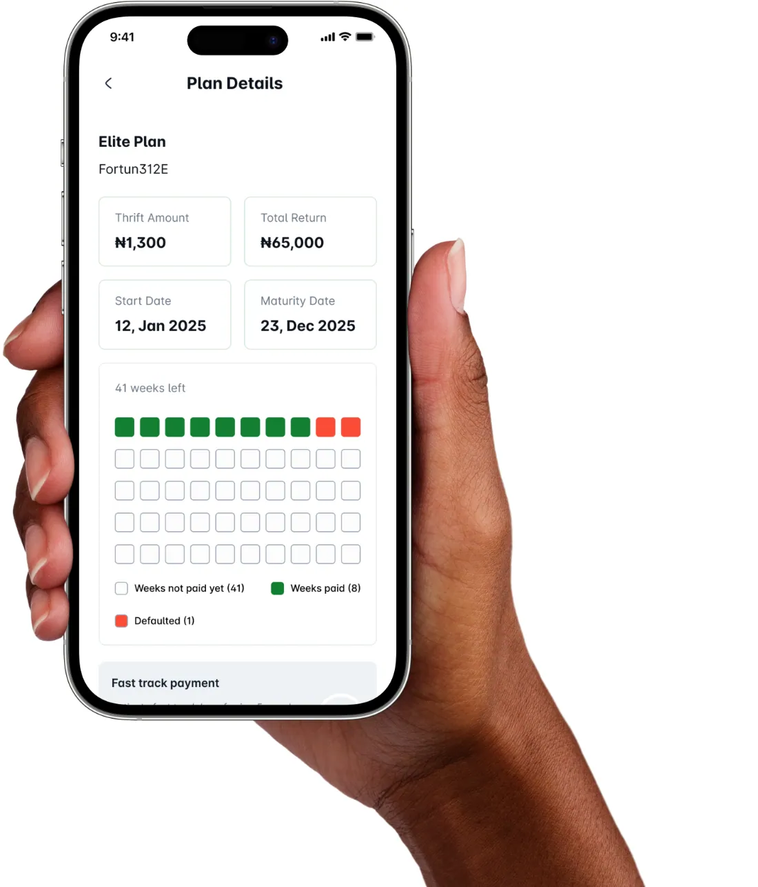
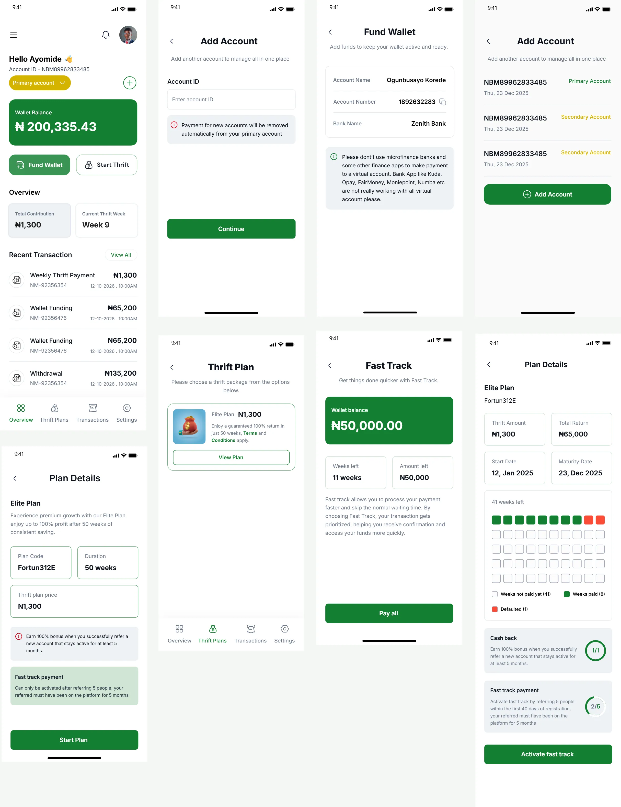
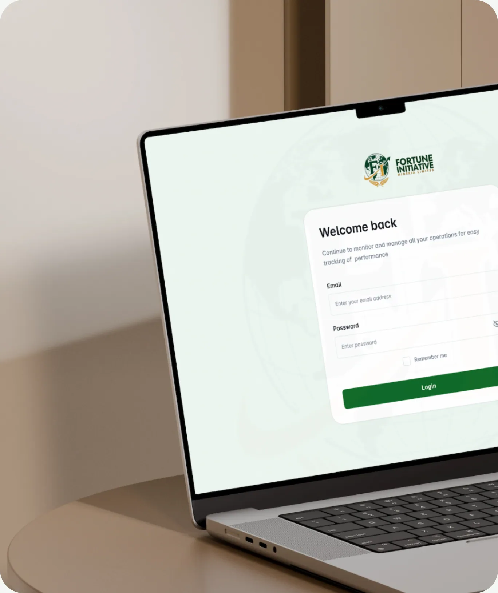
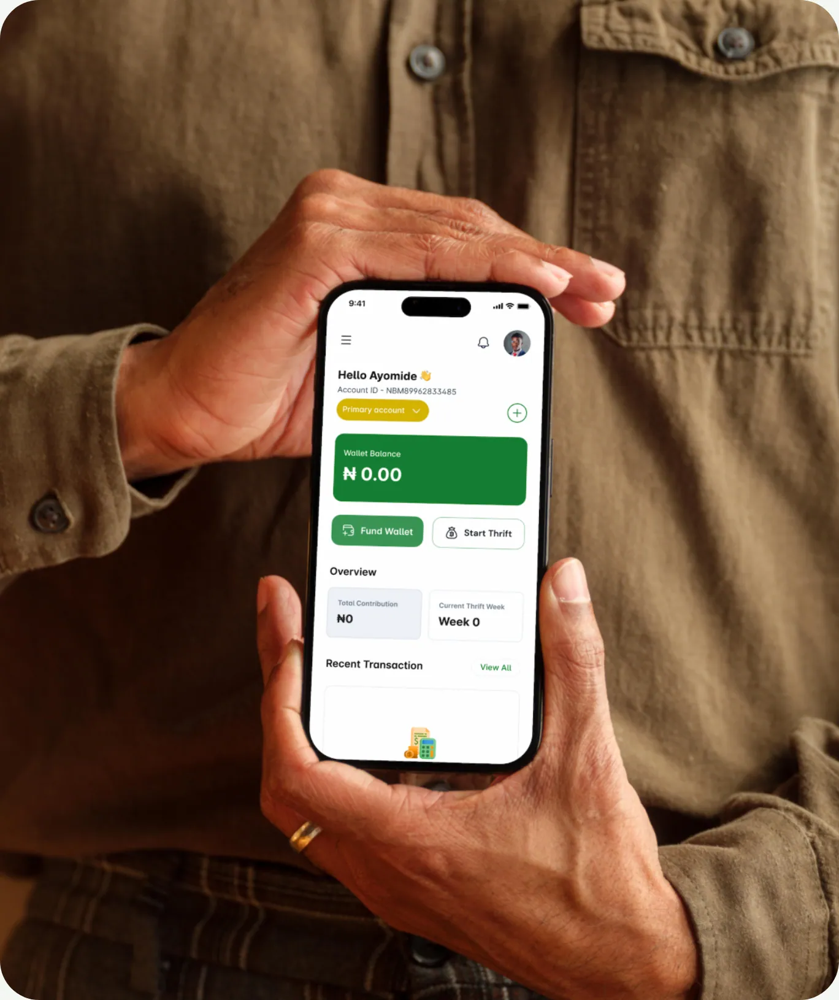
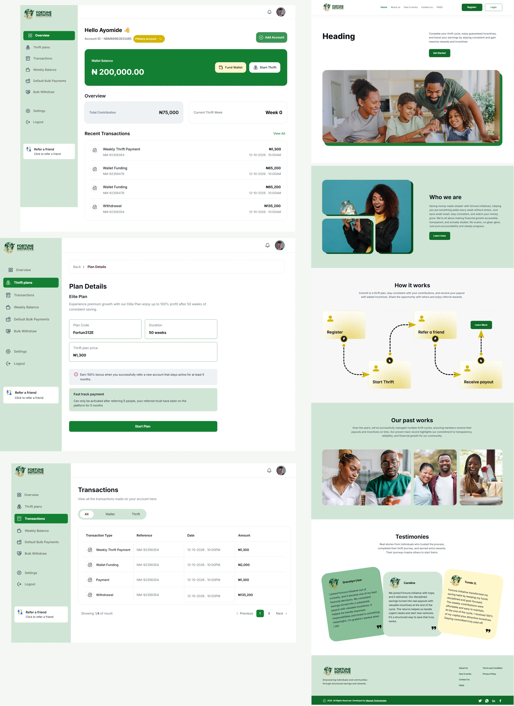
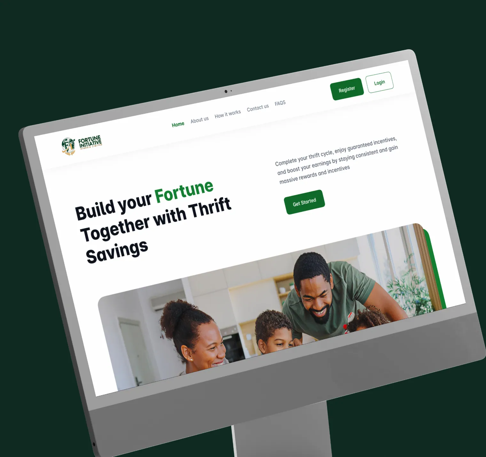

Fortune Initiative
Thrift saving platform
View live website
Project Overview
Fortune Initiative already had a website for introducing its savings scheme and an admin dashboard for managing operations. However, members needed a more convenient way to interact with the service beyond the website. There was an opportunity to bring essential savings activities, from tracking contributions to managing withdrawals, into a dedicated mobile application.
The design challenge
The challenge was to translate a savings scheme with multiple rules, payment requirements, and withdrawal procedures into a mobile experience that felt simple to use without losing the clarity and accountability the service required. The app also needed to work alongside the existing website and admin dashboard, ensuring members and staff could navigate the same savings process from different platforms.
Approach
I designed a member-focused mobile application that brings key savings activities into one place, making it easier to monitor contributions, understand savings progress, and navigate withdrawal requirements. I also considered how the app would connect with the existing website and admin dashboard to support a consistent experience across the platform.

Mobile app Ui

Swipe to see all screens →


Dashboard UI

Swipe to see the full layout →
Reflection & next steps
This project reinforced the importance of clarity and accountability when designing financial products. My next step would be to test key user journeys, particularly savings registration and withdrawals, to identify usability gaps and improve the overall experience.
Back to Home